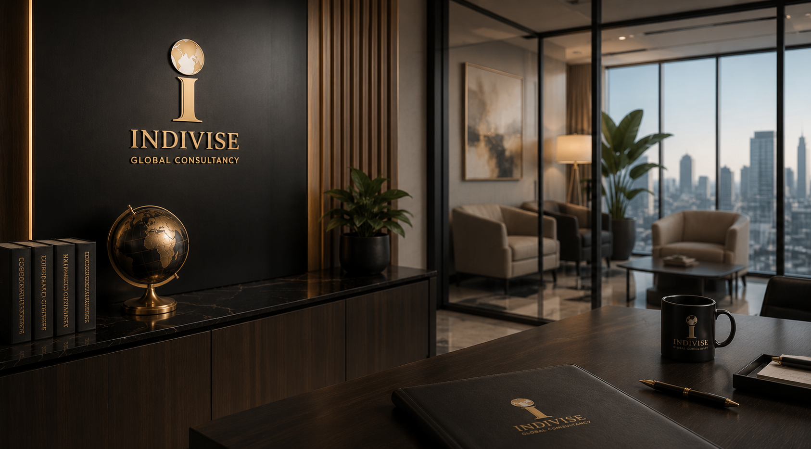

Evidence Before Opinion
We ground recommendations in law, regulation, market context, stakeholder incentives, and documented facts.
Indivise Global Consultancy helps founders, enterprises, public institutions, and sector leaders make decisions where regulation, strategy, governance, and execution meet.

India's business and policy environment is moving faster than traditional advisory models. Organisations need counsel that understands the commercial realities of growth, the legal consequences of decisions, and the institutional expectations of regulators, investors, boards, and partners.
Indivise Global Consultancy is structured as a multidisciplinary advisory platform. We combine legal reasoning, policy research, operating discipline, and strategic communication to help clients build durable systems instead of temporary fixes.
Advice is shaped around the client's sector, stage, regulatory exposure, stakeholders, and long-term ambition.
Recommendations are converted into documents, frameworks, operating processes, and practical next steps.
We build systems that reduce future risk and make organisations more credible with external stakeholders.
We ground recommendations in law, regulation, market context, stakeholder incentives, and documented facts.
Advisory should help leadership act. We avoid abstract opinions that cannot be translated into decisions.
Our work prioritises early detection, controls, policies, training, and board-ready documentation.
We read Indian business realities alongside global governance, compliance, ESG, AI, and financial standards.
Whether you need a one-time strategic mandate or an ongoing advisory partnership, Indivise Global Consultancy is structured to deliver sustained institutional value.